可维护可拓展的 DevOps 和版本管理系统设计草案
方便起见，这里我们把所有认证相关的和辅助开发的物理资源、服务、规范、流程统称为 CI/CD，尽管已经远超这个词的最大语义范围
背景
自去年以来，公司已经明面上投入了可能超过 600 小时的工作量在运维和 DevOps 相关工作上，经手人员设计涉及李一喆、苏鹏、冯智洋、毛亦夫及一个实习生，直至今日也没有完成，折算为开发费用非常昂贵。同时，工作内容呈现出不可维护性和反复性，东一榔头西一棒槌，缺乏顶层设计，即使有了顶层设计也无人执行到底。
不可维护性体现在：
受限于硬件预算和开发环境，各个组件的实装内容存在大量妥协，无法拓展
受限于开发需求的紧迫性，无论是代码内还是代码外都大量存在开洞的状态，众多已开发过的工具事实上处于荒废的状态
没有成型的规章制度保证开发、运维系统的稳定和可预测
没有统一的源码管理和审查规范，缺乏源码质量的直观反馈，每一次提交都是存在很大风险的，导致特性分支迟迟无法安全合并
缺乏维护文档，各种基础服务交错纵横，又无法安全迁移和升级
反复性体现在：
仓库管理存在反复。在前期更是由于混乱的提交导致代码库巨量膨胀，不得不消耗两人周的时间重新整理代码并提交，时至今日，代码仓库的熵仍然在不可逆地快速增长，提交混乱，分支混乱。
代码管理存在反复。由于没有合理的分支管理规范，谁在开发什么，进度如何，产生了多少问题缺乏统一的观测手段，目前强依赖于 Outline 中的文档交换信息——然而这样的信息是天然于源码之间没有关联手段的，Outline 的设计也不是为了临时性的信息交换。并且，当开发结束时，Outline 文档即被废弃，无法回溯。同时由于权限问题，Outline 文档无法被所有参与者看到。这是非常原始的、无法留档的交流手段。
开发内容存在反复。主要存在于开发辅助工具中。代码的编译系统经历过多次改变，前期是由于需求的变更，后期则是由于想法的变化和经手人的变化，这是开发中的正常现象，且目前已趋于稳定。然而，例如流水线和 DevOps 的开发却是始终反复的，交接时下一位同事总是从头做起，每次都产生了一个全新版本的 CI/CD 设计，这主要有以下原因：
上一个版本的 CI/CD 没有用户，没有时间完善，因而也没有稳定的文档
缺乏统一的 Specification，导致迥然而异的设计风格，无法、或者没有意识复用此前的产出内容
因为打包、发布等子系统无人维护，也没有自动化工具和强规范保证其可以得到维护，逐渐被废弃，上一个版本的 CI/CD 逐渐失去支撑
然而，一个良好的 CI/CD 系统是必要的，它可以保证：
我们可以不必投入人力验证每次更改是否是合理的、是否产生了退行、是否影响了编译，可以辅助较为安全地合并每次更改
我们可以对代码质量进行量化，同时依据量化结果约束代码质量，从而获取对于项目健康状况的直观认识，同时为下文将提到的代码审查提供有力支撑
我们可以自动化地验证项目的跨平台兼容性、自动化地组织部署和发布
另外，也保证了 CI/CD 系统自身是可维护的，能够随着开发状况和团队需求的变化而安全、迅速地变化
这里提及的“良好的 CI/CD 系统“包括以下内涵：
一个稳健的、宽松的硬件基础设施。
其容量足够大，足够容纳未来的扩展需求——基于当前情况设置上限是不合理的
有定期运行的、定时校验完好性的备份系统
一个整洁的、方便维护&拓展和回滚的基础服务集合。这样的服务应当包含以下内容：
一个可以通览服务状态、可以实时预警的 Dashboard
一个内网的 CA 和 DNS 域名系统，使用 IP:Port 访问是难于维护、不宜迁移的
一个内网的邮件或通知系统，当代码产生变更或者出现新的评论时，开发人员应当知晓
一个中心化的认证系统，由于处在内网开发环境，我们对安全的需求并不高，因此认证系统不存在很强的升级需求，较为稳定，因此可以支持将身份和内容解耦，内容系统将可以更宽松地升级
一个备份和回滚系统，能够方便地组织备份文件
一些静态分析工具。采取定时、事件触发组合的形式，时刻更新代码的状况，以及支撑合并审查
一套测试与分布式测试框架和对应工具
一个容器管理、发布系统。方便打包开发环境和快速跨平台调试——对于一个物理机来说，恢复环境过于困难
一些容器和物理机。分布式执行静态分析、编译、测试、打包、发布流程
一些常用源的镜像
一套层次分明，有一定强制性的执行规范和文档。没有人监督的系统会迅速变得荒芜。包括：
代码规范
提交规范
合并、代码审查规范
发布规范
基础服务维护规范
硬件维护规范
有固定的人员维护。人员的变更将使得经验难于传递，系统的设计风格变得凌乱。
近期，由于田同学的加入，开始有望有固定的人实现这样一个系统，避免出现一直存在的开发窘境，当然避免笔者过去的产出和想法打水漂，写了此文。
目标是：收敛熵增，强制规范，自动化一切。
架构
在背景中，我们其实已经叙述了需求和愿景，这里直截了当地给出系统架构。此系统分为四层：
物理基础设施层。包括核心服务器和虚拟节点，用于整备所有物理资源。
核心服务层。包括所有服务与数据，使用 Docker 统一管理，构成公司的核心数字资产。
执行与工作流层。基于核心服务执行数据管理、代码管理、编译测试等具体事务。
规范与治理层（Specifications）。用于规范执行层的使用方式，定义规则。
物理基础设施层
着眼点
这一层次的设计受上层服务类型影响，主要考虑点为：
首先是计算与管理分离。GitLab 之类的服务与具体的计算任务，例如编译、测试等不可以放在同一台机器上，否则容易出现 IO 竞争和资源抢占，导致基础服务无法正常工作。因此我们划分为三类节点：
管理节点（下称 OpsHost）：运行 GitLab、AD 域控、DNS、DHCP、Ansible 控制端。此类服务对 CPU 要求不高，但对 延迟和稳定性 极敏感。
计算节点（下称计算节点）：运行编译、测试等计算密集型任务。此类服务对 CPU 要求极高，对延迟和稳定性要求不高。开发机也在此列。
存储节点（下称存储节点）：运行存储服务，包括 iSCSI、NFS 等。此类服务对 CPU 要求不高，但对延迟和稳定性要求极高。
其次是存储与服务分离。其目的有两点：
保证存储空间可随时拓展和备份，不会影响到服务本身的配置。如果运维做的好，甚至可以在核心服务保持运行的情况下，拓展或更换存储介质。
服务无状态化，保证服务配置变更的安全性。更改 Dockerfile 之类的配置文件后，我们可以相信服务背后的数据——包括我们的代码仓库、各种二进制制品、文档都在独立存储介质的文件系统或数据库中。即使服务和计算节点硬件损坏，只需更换硬件并重新通过 PXE/Ansible 部署即可，不涉及数据迁移。
我们开发涉及到的持久化数据一般有三种：
GitLab 的仓库数据、Docker 镜像、二进制制品（包括模型文件、测试结果、编译结果等），它们通过 NFS/iSCSI 挂载在 TrueNAS 上
践行 Iac (Infrastructure as Code)，服务本身的配置（Dockerfile, Ansible Playbooks etc.）也是代码，它们存储在仓库中，并在硬盘中保留文件备份，以防仓库宕机。
底层保留 iSCSI 和 SAN 的拓展接口。当未来团队继续扩展，TrueNAS 读写遇到瓶颈时，可以只动存储单元，平滑引入分布式存储和高速内部网络，上层服务无感知，不需要重新配置服务。
另外，测试环境的硬件需要分层管理（测试流程也需要分层管理，下文会提及）。可选的测试环境方案有以下几类，依据隔离性、维护成本和适用场景进行对比：
 我们只主要选择 1，5，6，7. 原因如下：
我们只主要选择 1，5，6，7. 原因如下：
环境方案 1 对应本地开发环境。开发机的性能将极大影响开发效率，因此我们尽量避免在开发机上添加任何虚拟环境，特别是在开启了 Hyper-V 的情况下，再使用 VMWare 构成了嵌套虚拟化。虚拟机相较于 Docker/WSL 来说不够轻量和便捷，相较于物理机来说又不够真实，不适合开发使用。推荐使用双系统开发或使用 Docker。
环境方案 5 对应Docker 集群化测试。负责包括代码提交后的 CI 流水线，逻辑功能测试、接口测试、Headless 服务测试在内的各种与 GUI 无关的批量测试，Docker Container 实例资源丰富、易于拓展的特点将使得这一过程非常迅速和标准化。
环境方案 6 对应兼容性验证集群。用于验证软件在不同 OS（Win10/Win11/Ubuntu/Kylin）下的安装与运行情况。同时，由于虚拟机也可以随意拓展（虽然成本高于 Docker），也便于开发者通过远程桌面前往调试一些 GUI 程序。
环境方案 7 对应跨平台裸机性能与硬件测试环境。我们必需 Bare Metal 测试机，测试软件在真实硬件条件、真实使用场景下的表现。这些机器需要测试结束后重启通过脚本自动还原或切换回初始状态，避免环境发生漂移。这既保证了物理硬件的独占性，又解决了物理机环境难以重置的痛点。
然后是开发环境，开发环境最好使用 VHDX 文件启动，有需求的基于 Ventoy 配置双系统。这与目前基于镜像拷贝的装机模式差别不大，仍然保持充分的自由，不详述。事实上，我认为开发机应该包含尽可能多的内容，保证开盒即用——毕竟传东西到内网很麻烦，自己安装极其容易造成环境漂移，在此基础上，允许追求极致的稳定与习惯，这不同于测试机，测试机追求极致的灵活性与一致性。
最后，我们需要考虑备份和断电情况。
备份一般遵循 3-2-1 备份原则，即 3 份数据副本，2 种不同的存储介质，1 份异地存放，但我们的需求并没有太复杂，因此可以设计简化的版本。另外，由于存储与服务分离的原则，我们不需要备份服务的 Docker Container，只需要备份 NAS 上的数据。
首先需要一个热备份。热备份频率高，可能一小时一次，并保留最新的数个~数十个记录，末尾循环删除。ZFS 分区支持快照。特别是因为众多服务都在同一台机器上，服务机最好做双机热备。
其次需要一个冷备份。冷备份频率低，可能一周一次，防止 NAS 物理损坏或机房事故。
最后需要对服务配置单独备份。服务配置备份触发于每次服务发生更改时，便于服务快速恢复，且数据量不会太大。
针对机房可能出现的异常断电情况，必须建立软硬件联动的保护机制，防止文件系统损坏（特别是 ZFS 和数据库）。特别是 Linux 系统，断电时很容易造成系统和数据损坏。 物理层面上，我们只需要多准备一个支持网络管理和 USB 通讯的 UPS，容量支持核心设备继续运行 20 分钟即可。断电发生时，若短时没有恢复，UPS 应当经由 NAS 通知服务层、计算层、存储层依次关闭，最后关闭物理设备。
架构设计
网络拓扑和电源时序
综上所述，我们的内网基本物理架构和网络拓扑如下：
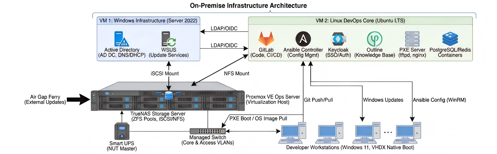
注意上图中TrueNAS没有画出，它应该在一台独立的机器上；VM2 现已拆分为 VM-2~4。异常断电相关的硬件和时序如图：

我们需要至少 4 台物理设备节点：
| 节点编号 | 设备角色 | 硬件 | 核心软件 |
|---|---|---|---|
| P-01 | 数据服务器 | 需要较大的内存和极大的硬盘，当前内网 230 文件服务器可担此任 | TrueNAS Scale |
| P-02 | 核心服务中心 | 需要极大的内存和极强的处理器，高速缓存，当前内网 230 文件服务器可担此任 | TrueNAS Scale |
| E-01 | 摆渡数据服务器 | 存在于外网。用于定期更新上游镜像源数据，需要较大的硬盘，可以没有显示器 | Windows + WSL |
| Net-01 | 核心交换机 | 至少 4 口万兆，预留给 NAS 的热备，需要有管理控制台 | Console |
在 P-02 上运行 4 台虚拟机: 51
| VM 编号 | 规格 | 角色 | 服务 |
|---|---|---|---|
| VM-1 | 4 核 8GB + 100GB | 身份认证 | AD 控制器、WSUS |
| VM-2 | 8 核 32GB + 500GB | 代码管理 | GitLab |
| VM-3 | 4 核 16GB + 200GB | 二进制资产和第三方库管理 | JFrog |
| VM-4 | 16 核 64GB + 500GB | 服务集群 | 所有其他 Docker 服务 |
另外，我们还需要一台带有 USB 和网卡的 UPS，当机房断电时，通知 TrueNAS，让 TrueNAS 通过 NUT Service 通知 P-02 依次关闭所有服务，避免数据损坏。
存储结构
由于数据重要性不同，我们使用分层存储设计，考虑负载和数据重要性，优化成本的同时保护核心机械硬盘的 IOPS 不被琐碎的镜像文件读写所榨干。共分三层：
快速访问层。处理的数据有海量小文件、高频 IOPS、极低延迟要求特征，包括分布式编译缓存、数据库、短期日志、源码仓库、Docker服务的持久化数据等，强调快速访问和低延迟。同时，如果能提供快速回滚和抗风险特性将是极好的。因此，我们选择ZFS + RAID-10以提高随机读写性能和缩短重建耗时，并开启LZ4压缩。
静态资产层。处理的数据包括历史编译制品、二进制依赖、LFS大对象、文档附件等，需要对大块数据顺序读写，需要高容量。因此可以使用HDD组建ZFS + RAID-Z2，并用SSD作为Special VDEV. 开启L2ARC缓存。
持久化存储层。处理的数据包括外部镜像、更新包、系统镜像、冷备份等，其体量巨大，损坏代价较小，访问不频繁，对延迟也不频繁，因此可以用大容量 HDD 组建 RAID-Z2 或不配置 RAID. 开启ZFS + ZSTD-9 压缩以节省空间。
对应的大致硬件布局如下：
| 存储层级 | 硬件规格建议 | 数量 | 作用说明 |
|---|---|---|---|
| 系统盘 | 32GB NVMe | 1 | 仅用于 TrueNAS 操作系统安装。 |
| 全闪池 (Fast) | 4~8TB NVMe SSD (企业级) | 4 | 组建 RAID-10，承载代码仓库、编译缓存及所有 VM 运行。 |
| 数据池 (Asset) | 16TB 企业级 HDD (现有) | 5 | 组建 RAID-Z2，存放 LFS 大文件，提供约 36TB 净容量。 |
| 元数据加速 | 1TB/2TB NVMe SSD | 2 | 组建 Mirror，作为 Asset-Pool 的 Special VDEV。 |
| 写缓存 (SLOG) | 128GB/256GB 高寿命 NVMe | 1 | 提升 NFS 写入性能并保护断电数据安全。 |
| 读缓存 (L2ARC) | (可选) 现有 NVMe 扩充 | 1 | 进一步加速热点资产文件的读取。 |
当然，如果有钱可以再扩充一倍，或将部分HHD替换为NVMe SSD.
这里我们大量使用了ZFS文件系统，因其提供了COW（写时复制）和校验和，保证数据完整性，并且内置压缩功能，支持快照和克隆，便于池化存储，而且支持内置的RAID-Z2，可以实现RAID-5的性能，同时提供RAID-6的容灾能力。
由于这部分与实际设备数量有关，这里仅为示例。如果按照上面数量安排的话，可以这样挂载：
| 挂载目标 | 对应 Dataset 路径 | 存储池选择 | 特殊配置项 |
|---|---|---|---|
| VM 镜像 | fast-pool/iscsi-vms | Fast-Pool | Volblocksize=16k, 无压缩。 |
| Git 源码 | fast-pool/git-source | Fast-Pool | Recordsize=64k, LZ4 压缩。 |
| 编译缓存 | fast-pool/sccache | Fast-Pool | Deduplication=on (视 CPU 性能)。 |
| LFS 资产 | asset-pool/gitlab-lfs | Asset-Pool | Recordsize=1M, 异步写入。 |
| MinIO 对象存储 | asset-pool/minio | Asset-Pool | Recordsize=1M, LZ4 压缩, 配额 8TB, 每日快照保留 7 天。 |
| 外部镜像 | mirror-pool/external | Mirror-Pool | Compression=ZSTD, 权限只读。 |
子网规划
另外，根据节点角色不同，网路（包括物理网卡和虚拟网卡）需要划分为多个 VLAN。主要原因在于：
像 Ops Server 和 NAS 之间的链路，存在数据量极大的情况，如果使用同一链路，将严重影响节点的性能。
环境隔离。这里隔离不仅是让测试区、开发区与核心服务之间流量互不干扰，更是防止网络一部分异常导致网络整体瘫痪，甚至无法维护。因此，一台物理机可能需要多个 IP 地址。
这里我们把内网分为 5 个 VLAN:
VLAN 10: iSCSI/SAN 链路。只包含 NAS 和 Ops Server，供 PVE 宿主机挂载 TrueNAS 的磁盘。 因为我们存储的不仅包括 Pip 镜像源这种带有大量琐碎文件的文件夹，更包括编译结果这类庞大又频繁读取的二进制文件，因此在这个 VLAN 中，需要全局开启巨型帧，使用万兆线，降低 CPU 处理开销，同时确保数据隔离。
VLAN 20: 开发区。包括所有开发者的开发机，主要执行分布式编译、拉取第三方库、下载依赖包等操作。要求不高。
VLAN 30: 测试区。包括三类测试节点：Docker Cluster, ESXi/PVE VMs Cluster, Bare Metals. 主要出口流量为编译、测试结果。视情况也可与 VLAN 20 合并。
VLAN 40: 核心服务农场。为虚拟化网段，托管从权限管理到节点状态检测的所有服务，通过 Traefik 实现服务自动发现与边缘路由，是整个内网流量的汇聚点。
VLAN 99: 管理区。仅供运维使用，包含 NAS, PVE, 交换机控制台，用于网络故障诊断。
我们使用标准的 C 类私有地址 192.168.x.0/24，其中 x 直接对应 VLAN ID，方便记忆：
| VLAN ID | 用途说明 | 网段 (CIDR) | 网关 IP | 掩码 | 核心策略 |
|---|---|---|---|---|---|
| VLAN 10 | SAN Storage (存储专用) | 10.10.10.0/24 | 无 (不配置) | /24 | MTU 9000。物理隔离，无路由，仅 PVE 和 NAS 互联。 |
| VLAN 20 | Dev Zone (开发区) | 10.20.0.0/20 | .1 | /20 | 核心办公区。DHCP 动态分配，涵盖 10.20.0.x ~ 10.20.15.x，允许访问 VLAN 40。 |
| VLAN 30 | Test Zone (测试区) | 10.30.0.0/20 | .1 | /20 | 测试机群/Docker 节点。DHCP 租期较短。DHCP 自动分配，涵盖 10.30.0.x ~ 10.30.15.x，访问受限，允许访问 VLAN 40 个别服务。 |
| VLAN 40 | Server Farm (服务区) | 10.40.40.0/24 | .1 | /24 | 全静态 IP。核心服务器和 VM 所在地，不需要太大，保持精简。 |
| VLAN 99 | OOB Mgmt (带外管理) | 10.99.99.0/24 | .1 | /24 | 全静态 IP。仅管理员接入。 |
VLAN 20 和 VLAN 30 这两个大网段包含了 4096 个地址，足够所有同事的所有设备使用，我们采用分层切片的策略，避免 IP 乱用导致管理混乱。以 VLAN 20 (Dev Zone) 为例 (10.20.0.0/20)：
| IP 范围 | 用途 | 备注 |
|---|---|---|
| 10.20.0.1 | 网关 (Gateway) | 核心交换机虚接口 (SVI) |
| 10.20.0.2 - 10.20.0.9 | 网络设备 | 二层接入交换机、无线 AP 的管理地址 |
| 10.20.0.10 - 10.20.0.254 | 静态预留 | 留给打印机、门禁、考勤机、特殊工控机 |
| 10.20.1.0 - 10.20.14.254 | DHCP 动态池 | 员工终端池 (约 3500 个 IP)。办公电脑、手机、开发机。 |
| 10.20.15.0 - 10.20.15.254 | VIP / 临时 | 预留给访客网络或临时扩容 |
VLAN 30 (Test Zone) 遵循同样的逻辑 (10.30.0.1 为网关，10.30.1.x 开始为 DHCP)。
| 设备名称 | 主机名 | 角色 | 管理口 IP (VLAN 99) | 存储口 IP (VLAN 10) | 业务口 IP (VLAN 40) |
|---|---|---|---|---|---|
| Net-01 | switch-core | 核心交换机 | 10.99.99.2 | - | 10.40.40.1 |
| P-01 | nas-core | TrueNAS 存储 | 10.99.99.10 | 10.10.10.10 | 10.40.40.5 |
| P-02 | pve-core | PVE 宿主机 | 10.99.99.20 | 10.10.10.20 | 10.40.40.6 |
| VM-01 | win-infra | Windows 基础服务 | - | - | 10.40.40.10 |
| VM-02 | gitlab-core | GitLab 核心 | - | - | 10.40.40.20 |
| VM-03 | jfrog-art | JFrog 资产 | - | - | 10.40.40.30 |
| VM-04 | linux-apps | Linux 应用 | - | - | 10.40.40.40 |
这样，在开发区同事看来，每个系统只有一张网卡，拥有唯一的 IP 地址——尽管它们可能含有多个虚拟机或者处于多个 VLAN 内。稍后的核心服务中的 DNS 一节将为这些地址添加内网域名。当 1000 台电脑接入网络时，AD/DHCP 应当自动注册以下格式的主机名，以便溯源：
开发机:
dev-{部门 ID}-{员工 ID}.coca.local(例如:dev-core-nekomiya.coca.local-> 解析为10.20.x.x)测试机:
test-{资产编号}.coca.local(例如:test-001.coca.local-> 解析为10.30.x.x)
同时这些也是域名。尽管我们使用 DHCP 服务，但在 DHCP 服务器上根据 MAC 地址分配固定的 IP 地址，以方便审计。
核心服务层
着眼点
在物理基础设施之上，服务层是整个研发体系的数据源和数据交换核心。鉴于此前服务随处乱跑、配置无法追溯、故障无法定位的痛点，本层设计遵循以下原则：
一切皆容器。除极少数强依赖 Windows 内核的服务（如 AD/WSUS）外，其余所有服务（Traefik, Keycloak, Docs, Monitoring 等）强制运行在 Docker Swarm 集群中, 确保了服务环境的一致性，方便服务的迁移、升级、回滚等操作。
配置与数据分离，分为三部分：
镜像。镜像是无状态的，随时可以从外网更新或重新构建。作为 Docker 镜像，服务镜像也通过 JFrog Container Registry 保留历史版本。
配置。配置文件通过 GitLab 进行版本控制，通过 Ansible 或 Docker Configs 下发。
数据。严禁存储在容器内部。所有持久化数据（如数据库文件、附件、日志）必须挂载至 TrueNAS 提供的 NFS/iSCSI 卷或 MinIO 对象存储中。
统一接入与观测。不再允许通过 IP:Port 裸奔访问服务。所有 HTTP/TCP 流量必须经过 Traefik 网关，通过内网域名（如 git.corp.local）访问。所有服务必须暴露 Prometheus Metrics 接口，日志统一收集至 Loki/Grafana，确保故障发生时有迹可循。
架构设计
服务层逻辑架构采用 Hub-Spoke 模式，以流量网关和身份认证为中心，驱动各个功能服务组。
DNS 服务规划
为了方便管理 10~1000 台设备，域名命名规范必须具备层级性：
根域名：coca.local， 指向 10.40.40.40 (Traefik 网关)
开发机与测试机域名：
dev-{部门 ID}-{员工 ID}.coca.local (例如: dev-core-nekomiya.coca.local -> 解析为 10.20.x.x)
test-{资产编号}.coca.local (例如: test-001.coca.local -> 解析为 10.30.x.x)
其他服务以表格形式在这里给出：
身份认证与网络基础设施：
序号 服务名称 完整域名 (FQDN) 功能说明 IP 地址 DNS 配置备注 1 Traefik traefik.coca.local 边缘网关，所有 HTTP 流量入口，自动服务发现。 10.40.40.40 A 记录；*.coca.local CNAME 到此 2 Keycloak (SSO) sso.coca.local 统一身份验证入口 (LDAP/OIDC)，对接 AD。 10.40.40.40 CNAME -> traefik 3 Windows AD ad.coca.local Windows 活动目录，管理 50+ 开发者身份。 10.40.40.10 A 记录；SRV 记录 _ldap._tcp 4 DNS (PowerDNS) dns.coca.local 内网 .coca.local 域名解析服务。 10.40.40.10 A 记录；所有客户端 DNS 指向此 5 PowerDNS Admin dns-admin.coca.local 可视化内网域名管理后台。 10.40.40.40 CNAME -> traefik 6 DHCP - 跨 VLAN 动态 IP 分配，配合 AD 自动注册主机名。 10.40.40.10 无需 DNS 记录 7 TFTP - PXE 网络引导文件传输。 10.40.40.10 无需 DNS 记录 8 iPXE Server pxe.coca.local 自动化装机与 VHDX 网络引导菜单。 10.40.40.40 CNAME -> traefik 9 WSUS wsus.coca.local Windows 补丁和更新分发管理。 10.40.40.10 A 记录 10 Stalwart Mail mail.coca.local 内网邮件服务器，发送 Git/CI 通知。 10.40.40.40 A 记录；MX 记录 编译与测试流水线：
序号 服务名称 完整域名 (FQDN) 功能说明 IP 地址 DNS 配置备注 1 GitLab Runner runner.coca.local CI/CD 任务执行器状态监控。 10.40.40.40 CNAME -> traefik 2 Jenkins jenkins.coca.local 备用 CI/CD 引擎，复杂流水线编排。 10.40.40.40 CNAME -> traefik 3 MinIO (S3) s3.coca.local sccache 全局编译缓存后端，S3 兼容接口。 10.40.40.40 CNAME -> traefik 4 MinIO Console oss.coca.local MinIO 存储管理后台。 10.40.40.40 CNAME -> traefik 5 Icecream Scheduler distcc.coca.local 分布式编译集群调度中心。 10.40.40.40 CNAME -> traefik 6 SonarQube sonar.coca.local 代码静态分析与质量扫描。 10.40.40.40 CNAME -> traefik 12 Sentry sentry.coca.local 自建错误追踪与性能监控平台。 10.40.40.40 CNAME -> traefik 13 Symbol Server pdb.coca.local Windows PDB 符号服务器。 10.40.40.40 CNAME -> traefik 协作与通信：
序号 服务名称 完整域名 (FQDN) 功能说明 IP 地址 DNS 配置备注 1 GitLab git.coca.local 核心代码托管、代码审查、CI/CD 中心。 10.40.40.20 A 记录 2 Mattermost chat.coca.local 替代企业微信的开源内网聊天工具。 10.40.40.40 CNAME -> traefik 3 Outline docs.coca.local 团队知识库、技术 Spec 文档中心。 10.40.40.40 CNAME -> traefik 4 Wiki.js wiki.coca.local 备用 Wiki 系统，Markdown 文档协作。 10.40.40.40 CNAME -> traefik 5 ZenTao (禅道) pm.coca.local 项目进度、Bug 跟踪、需求管理。 10.40.40.40 CNAME -> traefik 6 Nextcloud cloud.coca.local 内网文件共享与协作平台。 10.40.40.40 CNAME -> traefik 镜像与制品管理：
序号 服务名称 完整域名 (FQDN) 功能说明 IP 地址 DNS 配置备注 1 JFrog Artifactory jfrog.coca.local 制品库主入口 (Conan/Generic/Maven)。 10.40.40.30 A 记录 2 JFrog Container Registry docker.coca.local 私有 Docker 镜像仓库。 10.40.40.30 A 记录 3 Ubuntu APT Mirror mirror.coca.local/ubuntu Ubuntu 系统更新源镜像。 10.40.40.40 CNAME -> traefik 4 Kylin APT Mirror mirror.coca.local/kylin 麒麟系统更新源镜像。 10.40.40.40 CNAME -> traefik 5 PyPI Mirror mirror.coca.local/pypi Python 依赖包镜像 (Bandersnatch)。 10.40.40.40 CNAME -> traefik 6 NPM Mirror mirror.coca.local/npm NPM 镜像 (Verdaccio)。 10.40.40.40 CNAME -> traefik 7 NuGet Mirror mirror.coca.local/nuget C# / .NET 依赖包镜像。 10.40.40.40 CNAME -> traefik 8 VS Layout mirror.coca.local/vs Visual Studio 离线安装布局仓库。 10.40.40.40 CNAME -> traefik 9 WSUS Mirror wsus.coca.local Windows 更新服务器。 10.40.40.10 A 记录 10 WinGet Mirror mirror.coca.local/winget Windows 软件安装源镜像。 10.40.40.40 CNAME -> traefik 11 Open VSX mirror.coca.local/vsx VS Code 插件市场私有化镜像。 10.40.40.40 CNAME -> traefik 开发辅助工具：
序号 服务名称 完整域名 (FQDN) 功能说明 IP 地址 DNS 配置备注 1 Compiler Explorer ce.coca.local 离线版，实时 C++ 汇编分析与优化。 10.40.40.40 CNAME -> traefik 2 SourceGraph search.coca.local 全局代码搜索与交叉引用导航。 10.40.40.40 CNAME -> traefik 3 Doxygen docs-api.coca.local 自动化生成的 C++ API 文档展示站。 10.40.40.40 CNAME -> traefik 4 Swagger UI swagger.coca.local REST API 文档与调试界面。 10.40.40.40 CNAME -> traefik 5 Draw.io draw.coca.local 离线流程图/架构图绘制工具。 10.40.40.40 CNAME -> traefik 6 Excalidraw excalidraw.coca.local 手绘风格白板协作工具。 10.40.40.40 CNAME -> traefik 7 DevDocs devdocs.coca.local 离线开发文档聚合浏览器。 10.40.40.40 CNAME -> traefik 8 Kiwix (Stack Overflow) kiwix.coca.local Stack Overflow 离线镜像。 10.40.40.40 CNAME -> traefik 9 IT-Tools tools.coca.local 开发者常用在线工具集合。 10.40.40.40 CNAME -> traefik 10 Shader Playpen shader.coca.local 着色器在线编辑与预览。 10.40.40.40 CNAME -> traefik 运维与监控：
序号 服务名称 完整域名 (FQDN) 功能说明 IP 地址 DNS 配置备注 1 Grafana monitor.coca.local 监控大屏，通览所有服务器状态。 10.40.40.40 CNAME -> traefik 2 Prometheus prom.coca.local 时序指标数据采集与存储。 10.40.40.40 CNAME -> traefik 3 Grafana Phlare phlare.coca.local 持续性能剖析 (Continuous Profiling)。 10.40.40.40 CNAME -> traefik 4 Loki loki.coca.local 轻量级日志聚合系统。 10.40.40.40 CNAME -> traefik 5 ELK Stack elk.coca.local Elasticsearch/Logstash/Kibana 日志分析。 10.40.40.40 CNAME -> traefik 6 Uptime Kuma status.coca.local 服务可用性监控（绿灯/红灯看板）。 10.40.40.40 CNAME -> traefik 7 Portainer portainer.coca.local 可视化管理 Docker Swarm 集群。 10.40.40.40 CNAME -> traefik 8 NetBox net.coca.local IP 地址、资产、机架位管理。 10.40.40.40 CNAME -> traefik 9 Ansible Semaphore ansible.coca.local Ansible 可视化任务调度与执行。 10.40.40.40 CNAME -> traefik 10 Terraform - 基础设施即代码 (CLI)。 - 无需 DNS 11 Vault vault.coca.local 密钥与敏感配置管理。 10.40.40.40 CNAME -> traefik 12 Adminer adminer.coca.local 轻量级数据库管理界面。 10.40.40.40 CNAME -> traefik 13 RedisInsight redis.coca.local Redis 可视化管理工具。 10.40.40.40 CNAME -> traefik 15 TrueNAS Scale nas.coca.local 存储管理界面。 10.40.40.5 A 记录 16 Proxmox VE pve.coca.local 虚拟化平台管理界面。 10.40.40.6 A 记录
外网同步内容
Apt/Kylin 源，Pip 源，NPM 源, openvsx，winget
VS、系统更新、resharper
部分关键源码
新的系统镜像
核心服务结构
MinIO 对象存储设计
在核心服务层中，我们已经提到"所有持久化数据必须挂载至 TrueNAS 提供的 NFS/iSCSI 卷或 MinIO 对象存储中"。NFS/iSCSI 适合数据库文件、Git 仓库等 POSIX 语义的块/文件存储，而 MinIO 则负责所有 非结构化二进制数据 的统一管理——它提供 S3 兼容 API，天然适合海量 Blob 的存储、生命周期管理和跨服务共享。
着眼点
为什么需要独立的对象存储层，而不是全部挂 NFS？
生命周期管理。编译缓存 7 天过期、CI 制品 90 天归档、备份 180 天轮转——这些策略在 NFS 上需要自己写 cron + find，而 MinIO 原生支持 ILM (Information Lifecycle Management) 规则，声明式配置即可。
多服务统一接入。GitLab、Loki、Sentry、sccache 均原生支持 S3 后端，无需为每个服务单独挂载 NFS 卷和管理权限，统一通过 Access Key 鉴权。
水平扩展。当数据量增长时，MinIO 支持 Erasure Coding 和多节点扩展，而 NFS 的扩展路径（增加 HDD → 换更大 NAS → 分布式 NFS）远不如对象存储灵活。
不可变性。制品、备份等数据写入后不应被修改，MinIO 支持 Object Lock (WORM)，可以从存储层面防止误删和篡改。
部署架构
MinIO 部署在 VM-04 (linux-apps) 上，以 Docker 容器方式运行，数据目录挂载到 TrueNAS 的 Asset-Pool：
┌─────────────────────────────────────────────────────────────────┐│ VM-04 (linux-apps) ││ ││ ┌──────────────┐ ┌──────────────┐ ││ │ MinIO Server │────→│ MinIO Console│ ││ │ :9000 (API) │ │ :9001 (Web) │ ││ └──────┬───────┘ └──────────────┘ ││ │ ││ │ S3 API ││ ┌──────┴──────────────────────────────────────────────┐ ││ │ Consumers: │ ││ │ • GitLab (LFS, Uploads) │ ││ │ • JFrog (Conan 包, Docker 镜像层, CI 制品, 备份) │ ││ │ • sccache (分布式编译缓存) │ ││ │ • Loki (日志 chunk 存储) │ ││ │ • Sentry (crash dump / attachments) │ ││ │ • Nextcloud (文件 Blob) │ ││ │ • Backup Scripts (GitLab/JFrog 备份归档) │ ││ └─────────────────────────────────────────────────────┘ ││ │ ││ ▼ NFS mount ││ /mnt/asset-pool/minio-data/ │└─────────────────────────────────────────────────────────────────┘│▼ NFS over VLAN 10┌─────────────────────────────────────────────────────────────────┐│ P-01 (TrueNAS) ││ asset-pool/minio ← RAID-Z2 HDD + Special VDEV SSD ││ asset-pool/minio-warm ← (可选) 冷数据分层 │└─────────────────────────────────────────────────────────────────┘
MinIO 单节点 Single-Drive 模式足以满足当前 50 人团队的需求。当未来数据量超过 10TB 或并发压力增大时，可以平滑迁移到 Erasure Coding 模式（最少 4 块盘）。
Bucket 结构与数据分类
根据数据特征（生命周期、访问频率、重要性），我们将 MinIO 划分为以下 Bucket：
| Bucket 名称 | 数据内容 | 写入模式 | 访问频率 | 重要性 | 存储池 |
|---|---|---|---|---|---|
sccache | 分布式编译缓存 (ccache/sccache) | 高频小文件写入 | 极高 | 低（可重建） | Asset-Pool |
gitlab-lfs | Git LFS 大文件（模型、测试数据、大型资源） | 低频大文件写入 | 中 | 高 | Asset-Pool |
gitlab-uploads | GitLab 用户上传（Issue 附件、MR 截图等） | 低频 | 低 | 中 | Asset-Pool |
jfrog-filestore | JFrog Artifactory 二进制存储后端（Conan 包、Docker 镜像层、CI/CD 流水线制品、Generic 制品） | CI 上传 + 开发者拉取 | 高 | 极高 | Asset-Pool |
jfrog-backups | JFrog 系统配置导出、数据库 dump | 每日/每周批量写入 | 极低 | 极高 | Asset-Pool |
loki-chunks | Grafana Loki 日志数据块 | 持续追加写入 | 高 | 中 | Asset-Pool |
sentry-attachments | Sentry 崩溃转储、附件 | 事件触发 | 低 | 中 | Asset-Pool |
backups | GitLab 定时备份归档（全量备份、配置、数据库 dump） | 每日/每周批量写入 | 极低 | 极高 | Asset-Pool |
nextcloud-data | Nextcloud 文件共享 Blob | 用户驱动 | 中 | 高 | Asset-Pool |
说明：Conan 包管理、Docker 私有镜像仓库和 CI/CD 流水线制品（测试报告、覆盖率、构建产物）均由 JFrog Artifactory 承载——分别对应 Conan 仓库（
jfrog.coca.local）、Container Registry（docker.coca.local）和 Generic 仓库。不使用 GitLab Package Registry 和 Dependency Proxy。JFrog 的filestore配置为 S3 后端，将所有二进制数据统一存入 MinIO 的jfrog-filestorebucket，JFrog 自身只保留元数据索引，实现存储与服务的解耦。
生命周期策略 (ILM)
通过 MinIO 的 ILM 规则，自动管理数据的过期和清理，避免存储无限膨胀：
x# 安装 mc (MinIO Client)mc alias set coca http://s3.coca.local:9000 <access_key> <secret_key>
# sccache: 编译缓存 7 天过期，可重建，激进清理mc ilm rule add coca/sccache \ --expiry-days 7 \ --noncurrent-expiry-days 1
# gitlab-lfs: LFS 对象不过期，但非当前版本 180 天后清理mc ilm rule add coca/gitlab-lfs \ --noncurrent-expiry-days 180
# gitlab-uploads: 用户上传 365 天过期mc ilm rule add coca/gitlab-uploads \ --expiry-days 365
# jfrog-filestore: 由 JFrog 自身的清理策略管理（jfrog-cleanup.sh），MinIO 侧不设过期# 仅清理非当前版本（JFrog 删除后 MinIO 侧的残留标记）mc ilm rule add coca/jfrog-filestore \ --noncurrent-expiry-days 7
# jfrog-backups: JFrog 备份保留策略mc ilm rule add coca/jfrog-backups \ --prefix "daily/" --expiry-days 30mc ilm rule add coca/jfrog-backups \ --prefix "weekly/" --expiry-days 180
# loki-chunks: 日志保留 90 天mc ilm rule add coca/loki-chunks \ --expiry-days 90
# sentry-attachments: 崩溃数据 180 天过期mc ilm rule add coca/sentry-attachments \ --expiry-days 180
# backups: 备份保留策略# daily/ 前缀: 30 天# weekly/ 前缀: 180 天mc ilm rule add coca/backups \ --prefix "daily/" --expiry-days 30mc ilm rule add coca/backups \ --prefix "weekly/" --expiry-days 180
# nextcloud-data: 不过期，由 Nextcloud 自身管理# (不设置 ILM 规则)汇总视图：
| Bucket | 过期策略 | Object Lock | 版本控制 | 预估容量 |
|---|---|---|---|---|
sccache | 7 天 | 否 | 否 | 50~200 GB |
gitlab-lfs | 不过期（非当前版本 180 天） | 否 | 是 | 500 GB~2 TB |
gitlab-uploads | 365 天 | 否 | 否 | 10~50 GB |
jfrog-filestore | 不过期（由 JFrog 清理策略管理） | 是 (Governance) | 是 | 2~8 TB |
jfrog-backups | daily/ 30 天, weekly/ 180 天 | 是 (Compliance) | 是 | 200 GB~1 TB |
loki-chunks | 90 天 | 否 | 否 | 50~200 GB |
sentry-attachments | 180 天 | 否 | 否 | 20~100 GB |
backups | daily/ 30 天, weekly/ 180 天 | 是 (Compliance) | 是 | 500 GB~2 TB |
nextcloud-data | 不过期 | 否 | 是 | 100~500 GB |
总预估容量约 2.5~11 TB，在 Asset-Pool (RAID-Z2, ~36TB 净容量) 中占比约 7%~30%，留有充足余量。
访问控制
MinIO 使用独立于 AD/Keycloak 的 Access Key 体系（因为大部分消费者是服务而非人），按最小权限原则为每个服务创建专用凭据：
xxxxxxxxxx# 创建服务专用策略和用户# GitLab — 读写 gitlab-* bucket（LFS, Artifacts, Uploads）mc admin policy create coca gitlab-policy /etc/minio/policies/gitlab.jsonmc admin user add coca gitlab-svc <password>mc admin policy attach coca gitlab-policy --user gitlab-svc
# JFrog — 读写 jfrog-filestore（S3 filestore 后端）+ 写入 jfrog-backupsmc admin policy create coca jfrog-policy /etc/minio/policies/jfrog.jsonmc admin user add coca jfrog-svc <password>mc admin policy attach coca jfrog-policy --user jfrog-svc
# sccache — 仅读写 sccache bucketmc admin policy create coca sccache-policy /etc/minio/policies/sccache.jsonmc admin user add coca sccache-svc <password>mc admin policy attach coca sccache-policy --user sccache-svc
# Loki — 仅读写 loki-chunks bucketmc admin policy create coca loki-policy /etc/minio/policies/loki.jsonmc admin user add coca loki-svc <password>mc admin policy attach coca loki-policy --user loki-svc
# Backup — 仅写入 backups bucket（不可删除，配合 Object Lock）mc admin policy create coca backup-policy /etc/minio/policies/backup.jsonmc admin user add coca backup-svc <password>mc admin policy attach coca backup-policy --user backup-svc策略文件示例（/etc/minio/policies/sccache.json）：
xxxxxxxxxx{ "Version": "2012-10-17", "Statement": [ { "Effect": "Allow", "Action": ["s3:GetObject", "s3:PutObject", "s3:DeleteObject", "s3:ListBucket"], "Resource": ["arn:aws:s3:::sccache", "arn:aws:s3:::sccache/*"] } ]}与 TrueNAS 存储池的映射
MinIO 的数据目录通过 NFS 挂载到 TrueNAS 的 Asset-Pool 上。在 TrueNAS 中创建专用 Dataset：
| Dataset 路径 | 用途 | Recordsize | 压缩 | 配额 | 快照策略 |
|---|---|---|---|---|---|
asset-pool/minio | MinIO 主数据目录 | 1M | LZ4 | 8 TB (软限) | 每日快照，保留 7 天 |
说明：MinIO 内部以对象为单位存储，对象大小差异极大（sccache 几 KB ~ LFS 几 GB），选择 1M recordsize 是对大文件顺序写入的优化。小文件的额外空间浪费由 LZ4 压缩部分抵消。如果未来 sccache 的小文件 IOPS 成为瓶颈，可以将 sccache bucket 拆分到 Fast-Pool 的独立 Dataset（recordsize=64K）上。
Docker Compose 挂载配置：
xxxxxxxxxx# ~/coca-services/tier1-core/minio/docker-compose.ymlservices minio imageminio/miniolatest container_nameminio commandserver /data --console-address ":9001" environment MINIO_ROOT_USER"${MINIO_ROOT_USER}" MINIO_ROOT_PASSWORD"${MINIO_ROOT_PASSWORD}" MINIO_BROWSER_REDIRECT_URL"https://oss.coca.local" MINIO_SERVER_URL"https://s3.coca.local" volumes/mnt/asset-pool/minio:/data ports"9000:9000" # S3 API"9001:9001" # Console networkstraefik-publicbackend labels"traefik.enable=true" # S3 API"traefik.http.routers.minio-api.rule=Host(`s3.coca.local`)""traefik.http.routers.minio-api.service=minio-api""traefik.http.services.minio-api.loadbalancer.server.port=9000" # Console"traefik.http.routers.minio-console.rule=Host(`oss.coca.local`)""traefik.http.routers.minio-console.service=minio-console""traefik.http.services.minio-console.loadbalancer.server.port=9001" deploy resources limits memory4G healthcheck test"CMD" "mc" "ready" "local" interval30s timeout10s retries3 restartunless-stopped各服务集成配置要点
| 服务 | 配置方式 | 关键参数 |
|---|---|---|
| GitLab | gitlab.rb 中配置 object_store | connection.endpoint = "http://s3.coca.local:9000", consolidate = true（仅 LFS、Uploads，CI 制品走 JFrog） |
| JFrog Artifactory | binarystore.xml 配置 S3 filestore | <provider id="s3-storage">, endpoint: http://s3.coca.local:9000, bucketName: jfrog-filestore；CI 制品通过 Generic 仓库 ci-artifacts-local 存储 |
| sccache | 环境变量 | SCCACHE_BUCKET=sccache, SCCACHE_ENDPOINT=http://s3.coca.local:9000, SCCACHE_S3_USE_SSL=false |
| Loki | loki.yaml 中 storage_config.aws | s3: http://s3.coca.local:9000/loki-chunks, s3forcepathstyle: true |
| Sentry | sentry.conf.py 中 SENTRY_OPTIONS | filestore.backend: s3, filestore.options.bucket_name: sentry-attachments |
| Nextcloud | 管理后台 → 外部存储 | S3 兼容存储，bucket: nextcloud-data |
| Backup 脚本 | mc cp / aws s3 cp | GitLab: mc cp ... coca/backups/daily/; JFrog: mc cp ... coca/jfrog-backups/daily/ |
监控与告警
MinIO 原生暴露 Prometheus Metrics（/minio/v2/metrics/cluster），接入已有的 Grafana + Prometheus 监控栈：
| 指标 | 告警阈值 | 说明 |
|---|---|---|
minio_cluster_disk_total_free_bytes | < 20% 剩余 | 存储空间不足 |
minio_s3_requests_errors_total (5xx) | > 10/min | 服务端错误激增 |
minio_node_process_uptime_seconds | = 0 | MinIO 进程宕机 |
minio_bucket_usage_total_bytes (per bucket) | 超过预估容量 2x | 某 bucket 异常增长 |
容量规划与扩展路径
xxxxxxxxxx阶段 1 (当前, 50 人团队):Single-Node Single-DriveAsset-Pool NFS 挂载, 预估 2~4 TB↓阶段 2 (100+ 人, 数据 > 10 TB):Single-Node Erasure Coding (4 drives)拆分热数据 (sccache) 到 Fast-Pool↓阶段 3 (500+ 人, 数据 > 50 TB):Multi-Node Distributed MinIO独立存储节点, 万兆互联引入 MinIO Tiering (热→温→冷自动分层)
二进制数据流转总览
综合 JFrog Artifactory（Conan 包 + Docker 镜像管理）和 MinIO（对象存储），公司的二进制数据按用途分为以下类别，各有明确的存储归属：
| 数据类型 | 管理入口 | 实际存储位置 | 管理方式 | 生命周期 |
|---|---|---|---|---|
| 编译中间文件 (sccache/ccache) | sccache CLI | MinIO sccache bucket | ILM 自动过期 | 7 天 |
| Conan 包 (带版本) | JFrog conan-local | MinIO jfrog-filestore bucket (S3 后端) | jfrog-cleanup.sh 保留策略 | 保留最近 N 版本 + stable |
| Docker 私有镜像 | JFrog Container Registry | MinIO jfrog-filestore bucket (S3 后端) | JFrog GC + 镜像 tag 策略 | 按 tag 策略保留 |
| CI/CD 流水线制品 | JFrog Generic 仓库 ci-artifacts-local | MinIO jfrog-filestore bucket (S3 后端) | JFrog 清理策略 | 90 天（按路径前缀清理） |
| Git LFS 大文件 | GitLab LFS | MinIO gitlab-lfs bucket | 版本控制 + 非当前版本过期 | 当前版本永久, 旧版本 180 天 |
| 镜像源 (APT/PyPI/NPM) | 静态文件服务 / JFrog Remote | NFS 或 JFrog 本地缓存 | 外网同步脚本定期更新 | 持续更新 |
| GitLab 备份 | backup 脚本 | MinIO backups bucket (Object Lock) | ILM 分层过期 | daily/ 30 天, weekly/ 180 天 |
| JFrog 备份 | backup 脚本 | MinIO jfrog-backups bucket (Object Lock) | ILM 分层过期 | daily/ 30 天, weekly/ 180 天 |
核心设计：JFrog Artifactory 的
filestore配置为 S3 后端（指向 MinIOjfrog-filestorebucket），JFrog 自身数据库仅存储元数据索引。这意味着所有 Conan 包、Docker 镜像层和 CI/CD 流水线制品的实际二进制数据都统一存储在 MinIO 中，享受 Asset-Pool 的 RAID-Z2 冗余保护和 ZFS 快照能力，同时 JFrog 服务本身变为近乎无状态，便于升级和迁移。
执行与工作流层
这一层定义了数据如何在上述服务间流转，构成了日常开发的具体路径。
3.1 典型开发工作流
需求与分支：开发者从
main分支检出特性分支feature/xxx。提交与验证：本地开发提交代码，触发 Pre-commit 钩子进行简单的格式化和静态检查。
合并请求 (MR)：推送到 GitLab，创建 Merge Request。
自动化流水线：
CI 服务拉取代码。
运行单元测试和静态分析（SonarQube）。
构建测试制品。
反馈：流水线状态和质量报告直接回写到 MR 评论区。
代码审查：资深开发者/MaintainerReview 代码，结合自动化的质量报告决定是否合并。
合并与发布：合并入
main，触发发布流水线，生成正式版本制品推送到 Nexus/Harbor，并自动更新文档。
3.2 运维与维护工作流
基础设施即代码 (IaC)：所有服务的配置变更（如 Nginx 配置、Docker Compose 文件）通过 Git 仓库管理。
配置漂移检测：定期运行检查脚本，确保实际环境与 Git 配置一致。
备份策略：
数据库：每日全量备份，每小时增量备份。
代码库：实时镜像或高频快照。
验证：每周自动化运行一次“备份恢复演练”，在一个隔离环境中尝试从备份恢复核心服务，确保备份文件有效。
规范与治理层 (Specifications)
规范是自动化的基石。
4.1 代码库规范
Monorepo vs Polyrepo：明确项目的仓库策略。对于强依赖组件，建议 Monorepo 以保证原子性提交。
目录结构：统一所有项目的顶层目录结构（e.g.,
/src,/docs,/scripts,/tests）。
4.2 分支与提交规范
分支模型：采用 Trunk Based Development 或 简化版 Git Flow。主分支必须保持随时可发布状态。
Commit Message：强制遵循 Conventional Commits 规范（feat, fix, docs, style, refactor...），以便自动化生成 Changelog。
4.3 版本号规范
遵循 Semantic Versioning (SemVer 2.0.0)。
所有的发布制品必须打上版本 Tag，禁止使用
latest这种不确定的标签部署生产环境。
4.4 审查规范
Checklist：MR 模板中包含自查清单（文档是否更新？测试是否通过？）。
最少人数：核心模块至少需要 2 人 Approval 方可合并。
4.5 硬件与资源规范
命名规范：服务器、虚拟机、容器需遵循统一的命名规则（e.g.,
role-region-index）。标签管理：利用 Label 管理构建节点的能力（e.g.,
windows,linux,gpu,high-mem），确保任务调度到正确的节点。
具体实施步骤
我们假定物理层已经按照网络规划完成了网络设备的配置。我们的管理机目前已经接入VLAN 99，IP为10.99.99.254.
TrueNAS
首先使用TrueNAS的ISO安装TrueNAS系统，创建Admin时选择Configure in Web UI。
在完成物理安装并重启后，P-01 会进入 TrueNAS Scale 的 Console Setup 蓝底菜单界面。由于我们正处于物理隔离环境且需要严格遵循 10.x.x.x 的网络规划，你需要手动完成以下初始化步骤：
在TrueNAS终端中配置网络接口(Configure Network Interfaces)。三张分属VLAN 10, VLAN 40, VLAN 99的网卡分别分配IP(Alias) 10.10.10.10/24, 10.40.40.5/24, 10.99.99.11/24。VLAN 10的MTU设置为9000以支持巨型帧，VLAN 40的MTU设置为1500，VLAN 99的MTU设置为1500。
配置默认路由与 DNS(Configure Default Settings)。虽然内网物理隔离，但为了后续与 VM-01 (DNS) 通讯，必须预设好指向。设置Host Name为 nas-core, Domain为 coca.local，GateWay 为 10.40.40.1（核心交换机网关），DNS Server 1为 10.40.40.10（指向未来的 VM-01 Windows AD/DNS），DNS Server 2为 10.40.40.1（核心交换机备用）。
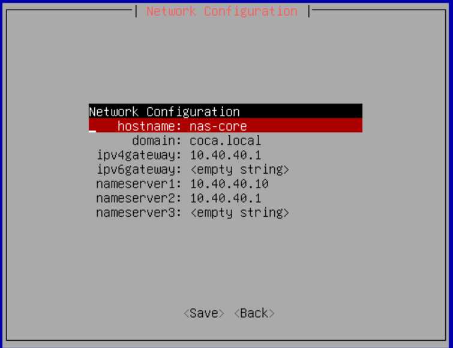
此时我们应该已经可以通过管理机访问http://10.99.99.11，浏览器访问的话你应该能看到TrueNAS的Web界面。选择Administrator User并设置好密码。
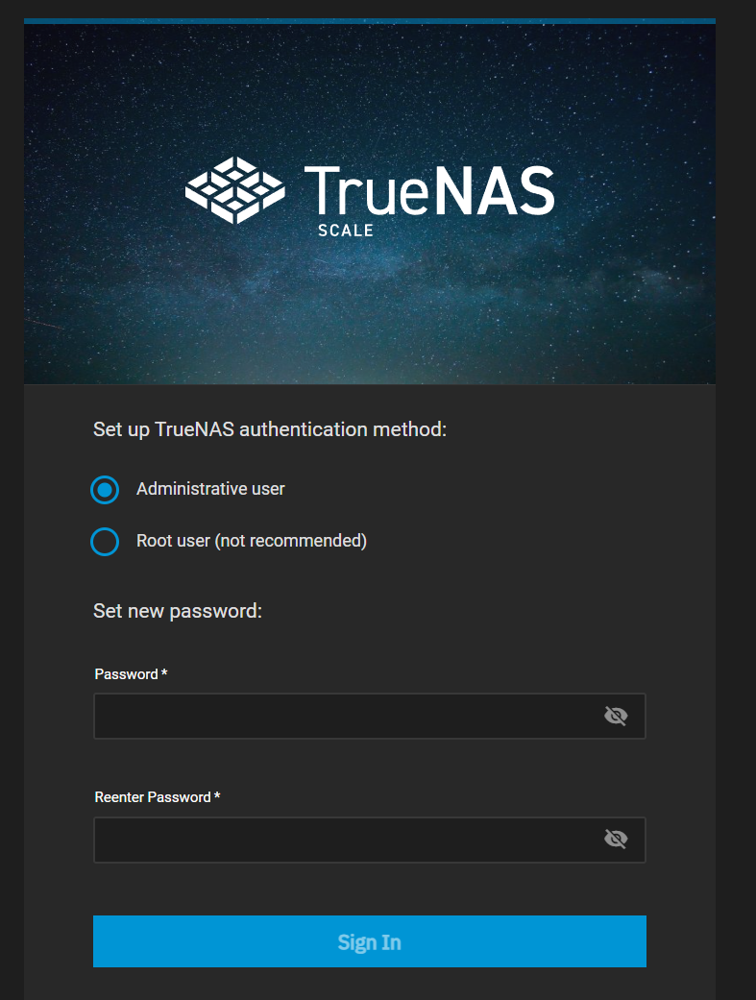
下面我们来配置逻辑磁盘（示例）。
创建存储池Storage -> Create Pool
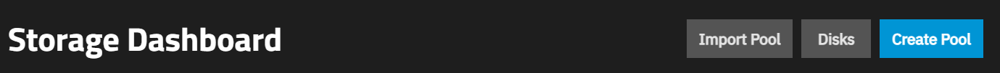
创建Fast-Pool, 组成RAID-10
创建Asset-Pool, 组成RAID-Z2，并设置SSD为Special VDEV用于元数据加速
创建ZFS卷（ZVol）。Datasets -> Fast-Pool
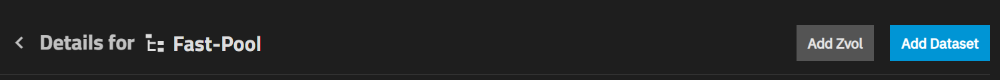
创建Fast-Pool/iscsi-vms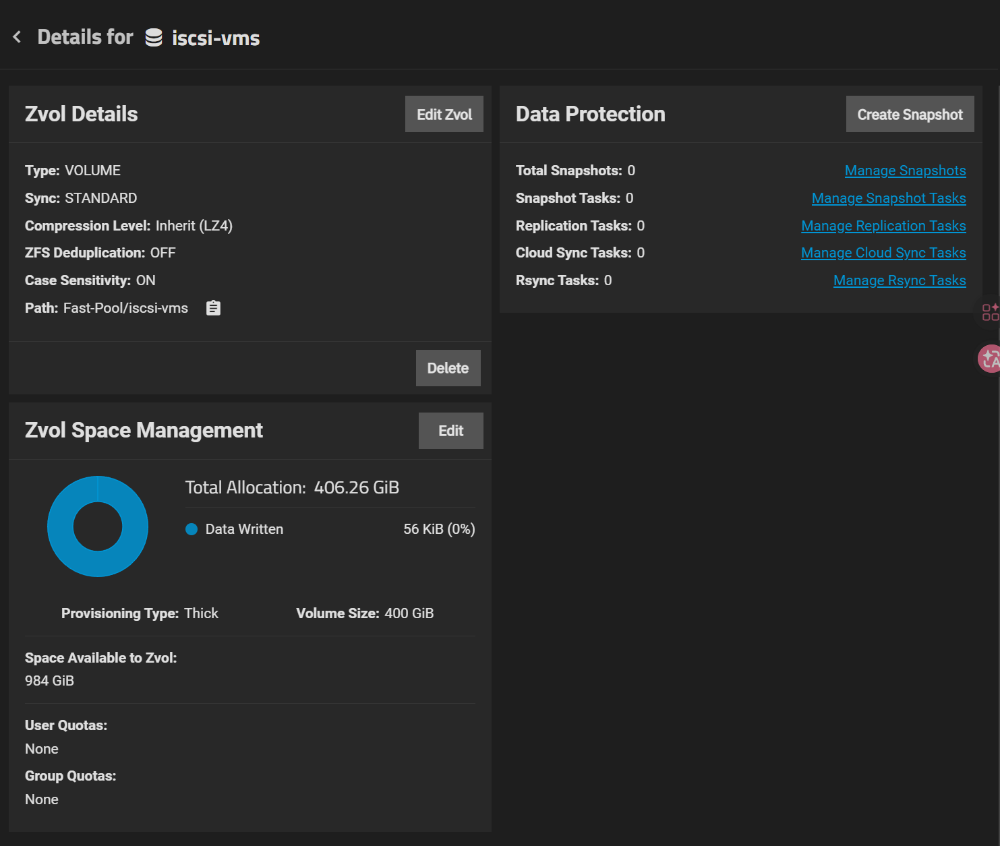
开启iSCSI服务，Portal绑定到VLAN 10的10.10.10.10（TrueNAS在VLAN 10的IP），Initiator允许PVE 10.10.10.20访问，Target 关联到LUN0. (System Settings > Services)
TrueNAS支持SSH链接和专属命令行，也可以使用命令行执行脚本，这符合IaC的理念。
PVE
PVE 安装与磁盘配置
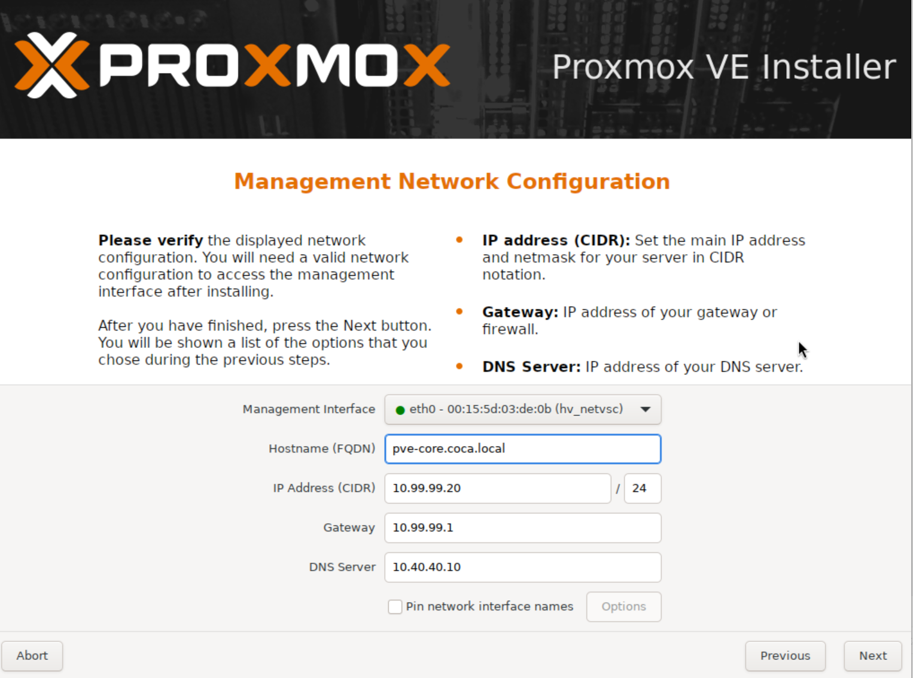
此时访问10.99.99.20:8006，你应该能看到PVE的Web界面。
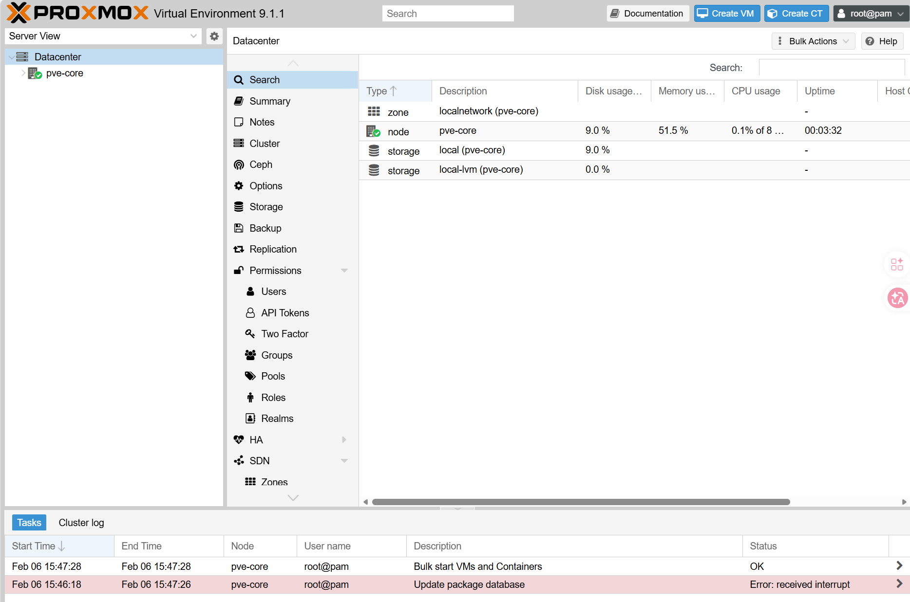
设置好网络参数，PVE应该可以访问VLAN 10, VLAN 40, VLAN 99。
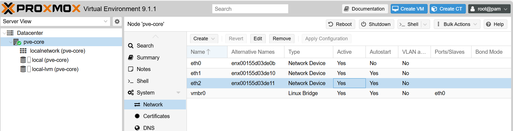
添加我们创建的iSCSI Target。
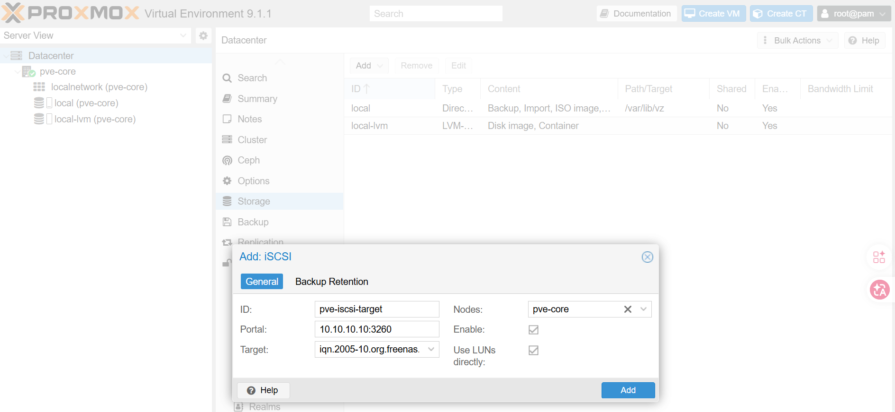
现在PVE可以访问iSCSI Target了，但是是Raw Diask，所以我们需要初始化一个LVM Volume Group，且不可Shared。
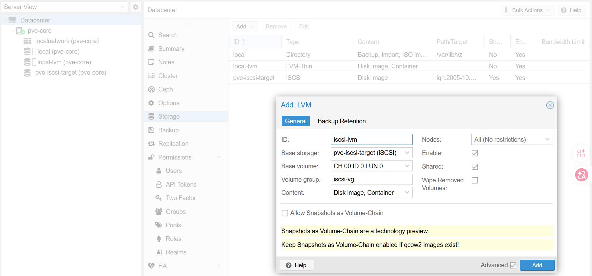
然后使用命令行在其上创建一个Thin Pool：
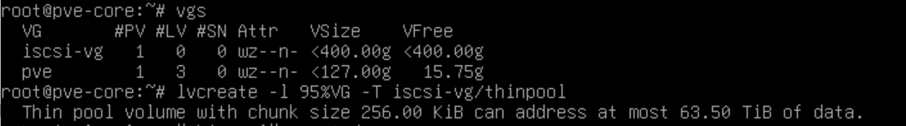
最后创建一个LVM Thin Volume Group并删除临时LVM，因为两者用的时相同的物理卷组：
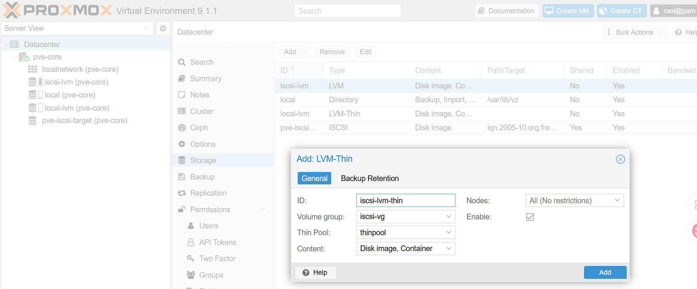
这一切基于我们只有一个PVE核心节点，其集群化后存在风险，不可集群化，详见链接。
操作后状态如下：
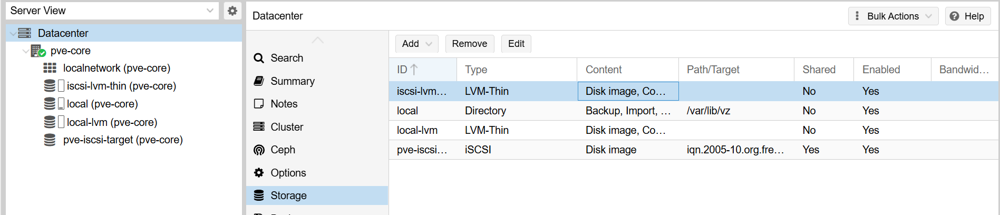
VM-01 (Windows AD/DNS) 创建
为了保证IaC，提高基础设施的可维护性，下面我们将转向Terraform管理。首先在PVE上创建一个API Token:
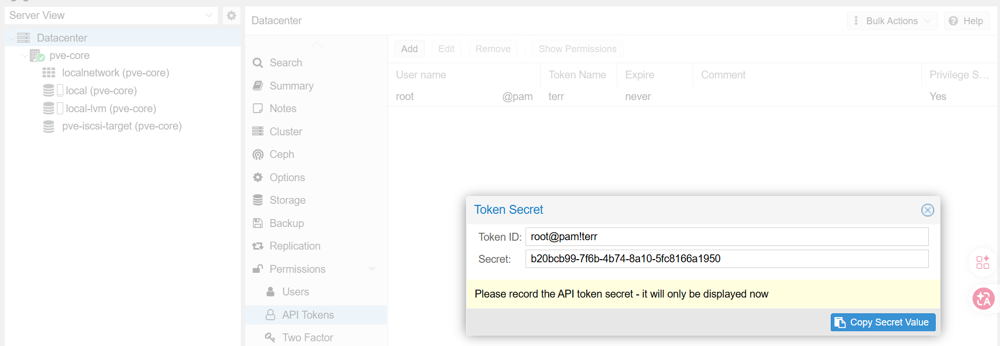
我们需要一个proxmox provider以让Terraform管理PVE：
xxxxxxxxxxterraform { required_providers { proxmox = { source = "telmate/proxmox" version = "3.0.2-rc07" } }}
provider "proxmox" { pm_api_url = "https://10.99.99.20:8006/api2/json" pm_api_token_id = "root@pam!terr" # terr is the token ID pm_api_token_secret = "2317d593-6a57-4400-9d03-a5319a315e66" # the token secret pm_tls_insecure = true}然后将Windows Server 2025 ISO和Virtio ISO上传到PVE的Local Storage，不然Windows Installer看不到iSCSI硬盘。
##
基于你的最新思考，特别是意识到“基础设施工具（Ansible）不能依赖它所管理的资源”这一关键点，我们重新设计了 Coca 架构的 数据库分配策略 V2.0。
这个新策略的核心逻辑是：按“故障爆炸半径”和“救火优先级”进行分级。
Coca 数据库分级策略 (The Coca DB Standard)
我们将 100+ 个服务的数据库划分为三个安全等级（Tier 0, Tier 1, Tier 2）以及一个特殊的缓存层。
Tier 0: 基础设施控制层 (The Control Plane) 定义：管理其他服务器“生死”的服务。如果它们挂了，你可能连修复命令都发不出去。
包含服务：Ansible AWX / Semaphore, HashiCorp Vault, NetBox, Keycloak (身份认证)。
策略：绝对隔离 (Strict Isolation)。
部署方式：每个服务自带独立的数据库容器（Sidecar模式）。
网络：甚至不加入公共后端网络，仅通过特定端口暴露给 Web UI。
理由：避免“死锁”。当共享数据库崩溃时，你需要 Ansible 去自动重启它，如果 Ansible 也依赖该数据库，你就陷入了死循环。
Tier 1: 业务核心层 (The Mission Critical) 定义：1000 人研发工作的“饭碗”。如果挂了，全公司代码提交、编译、发布全部停摆。
包含服务：GitLab, JFrog Artifactory, Sentry, SonarQube。
策略：独享实例 (Dedicated Instance)。
部署方式：每个服务配置一个经过专门参数调优（Tuned）的独立数据库容器。
存储：挂载到 TrueNAS fast-pool 的独立 Dataset 上，配置高频快照。
理由：
GitLab 需要极高的并发写入能力。
SonarQube 分析代码时会长时间占用 CPU，不能让它拖慢 GitLab。
Sentry 的写入量极大，容易产生慢查询，必须隔离。
Tier 2: 长尾应用层 (The Long Tail) 定义：辅助性工具。挂了只会影响局部体验（如文档打不开、看板看不了），不影响核心产出。
包含服务：Outline Wiki, BookStack, Nginx Proxy Manager, Portainer, 各种 Dashboard, 内部签到系统。
策略：共享集群 (Shared Cluster)。
部署方式：在 VM-04 上建立一组 "Public DBs"。
infra-shared-postgres (PostgreSQL 16)
infra-shared-mysql (MySQL 8.0)
资源：统一分配 4GB-8GB 内存，服务之间通过 Database Name 隔离。
理由：极大节省内存。80 个空闲的小服务如果每人带一个 MySQL，系统内存会被榨干。
Tier 3: 缓存与队列层 (Redis Strategy) 策略：按“数据持久性”分离。
Redis-Queue (独享)：给 GitLab/Sentry 专用。不仅作缓存，还作任务队列（Sidekiq）。要求极低延迟，建议独享。
Redis-Cache (共享)：给 Tier 2 的所有小服务做页面缓存。挂了也就页面加载慢一点，无所谓。
实施蓝图：Docker Compose 规划
在 VM-04 上，你的 docker-compose 文件结构应该反映这种分层。
Tier 0: Ansible Semaphore (完全自闭环) YAML
~/coca-services/tier0-infra/semaphore/docker-compose.yml
services: semaphore: image: semaphoreui/semaphore depends_on: - sem-db # 依赖自己的专属小数据库
sem-db: # 只有 semaphore 能用，外部不可见 image: postgres:15-alpine volumes: - /mnt/fast-pool/infra/semaphore-db:/var/lib/postgresql/data networks: - internal-only
Tier 1: GitLab (独享巨兽) YAML
~/coca-services/tier1-core/gitlab/docker-compose.yml
services: gitlab: image: gitlab/gitlab-ce depends_on: - gitlab-postgresql # 依赖专属调优数据库 - gitlab-redis # 依赖专属队列
gitlab-postgresql: image: postgres:14 # 锁定版本 command: postgres -c 'shared_buffers=2GB' -c 'work_mem=64MB' # 专属调优 volumes: - /mnt/fast-pool/core/gitlab-db:/var/lib/postgresql/data
gitlab-redis: image: redis:6.2
Tier 2: 共享数据库组 (节省资源) YAML
~/coca-services/tier2-shared/shared-db/docker-compose.yml
services: shared-postgres: image: postgres:16 container_name: shared-pg ports: - "5432:5432" # 暴露给内部网络 volumes: - /mnt/fast-pool/shared/pg-data:/var/lib/postgresql/data deploy: resources: limits: memory: 8G # 给足内存供80个小服务分享
shared-mysql: image: mysql:8.0 container_name: shared-mysql # ...配置同上...
总结与决策
这个 V2.0 策略 是最稳健的：
Ansible/Vault 可以在核战中幸存（Tier 0 隔离）。
GitLab/JFrog 性能拉满，互不干扰（Tier 1 独享）。
80 个小服务 乖乖排队，不浪费公司内存（Tier 2 共享）。
苏鹏，数据库的设计已经完美闭环。现在，请允许我执行下一步：为你提供 VM-01 (Windows AD) 的 Terraform 代码，让我们把这套基础设施的“身份验证中心”立起来。
针对隔离编译需求。multirepo + 高频联动 + commit 版本 不是“选择”，而是“症状”。